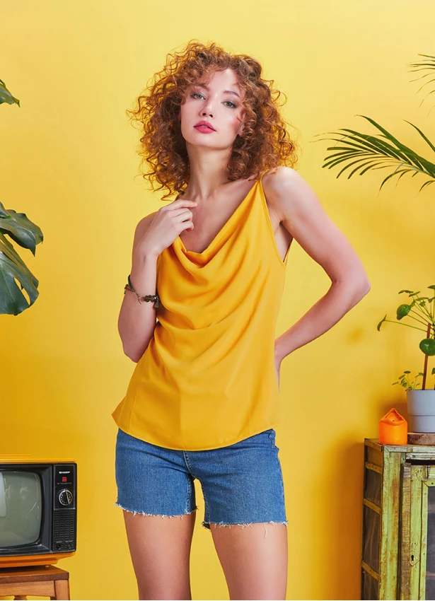
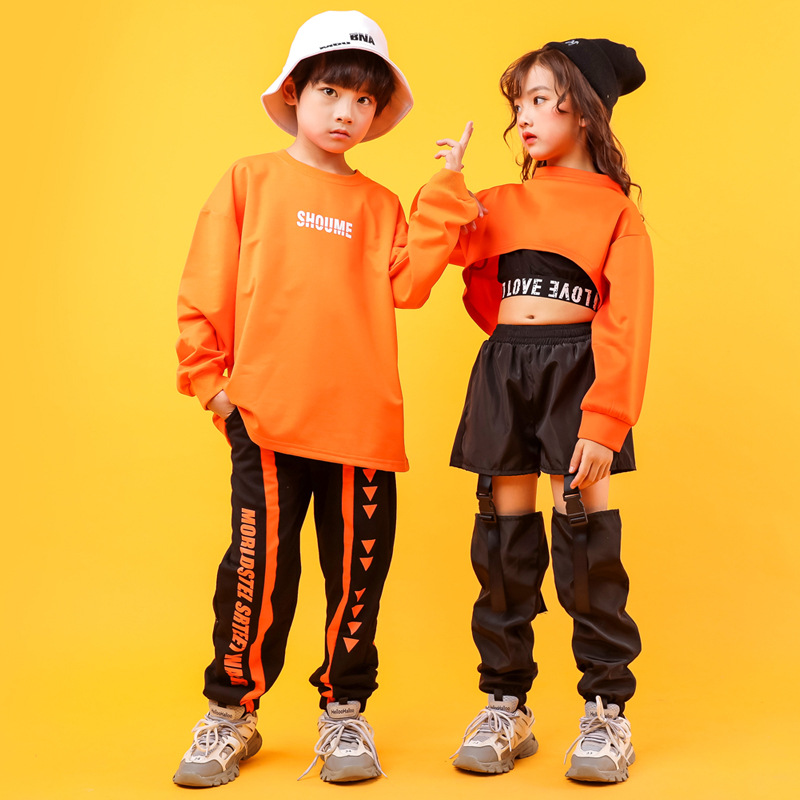
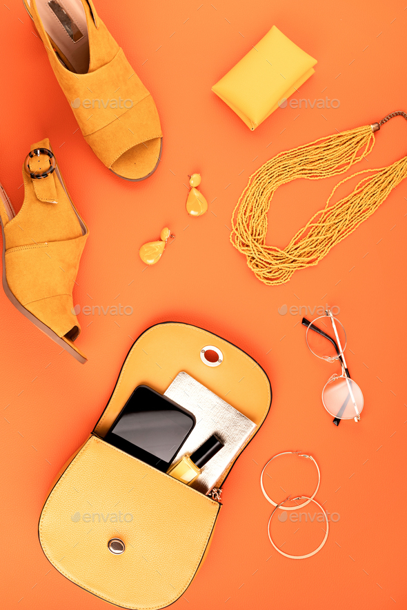

Men's Shirts
.png)
A men's shirt outfit is a classic style that can be dressed up or down depending on the occasion. Men's shirts come in a variety of fabrics and patterns, allowing for personalization and style expression. The fit of the shirt is also important, with options ranging from slim-fit to relaxed-fit. Overall, a men's shirt outfit is a versatile, timeless style that is suitable for a range of settings.
Women's Dresses

A women's dress outfit is a feminine, elegant style that can range from casual to formal. Dresses come in various lengths, from mini to maxi, and styles, such as A-line, shift, and wrap. The fabric and pattern of the dress can also vary, with options ranging from floral prints to solid colors. Accessories such as jewelry, shoes, and handbags can enhance the overall look. Overall, a women's dress outfit is a versatile style that can flatter any body type and be appropriate for various events.
Kids' Clothing

A kids' clothing outfit is a cute and comfortable style that is designed specifically for children. Kids' clothes come in a variety of colors, patterns, and styles, ranging from playful to practical. Clothing options for kids include tops, bottoms, dresses, and outerwear, all tailored to fit and support a child's growing body. Accessories such as hats, shoes, and backpacks can also complement the outfit. Overall, a kids' clothing outfit is a fun and functional style that allows children to express their personalities while staying comfortable and ready for any adventure.
Accessories

An accessories outfit refers to the way that accessories, such as jewelry, hats, scarves, belts, and bags, are styled together to enhance an outfit. Accessories can be used to add color, texture, and personality to any outfit, whether it be casual or formal. They can also be used to tie an outfit together or make a statement. Accessory styles can range from classic and timeless to bold and trendy, allowing for individuality and personal expression. Overall, an accessories outfit is an essential part of any fashion-conscious individual's wardrobe, providing endless opportunities for creativity and style.